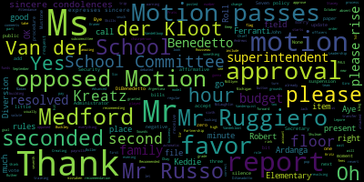
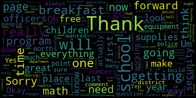
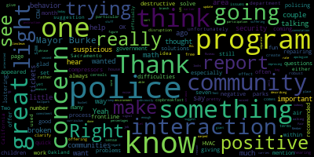
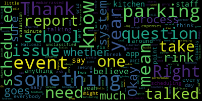
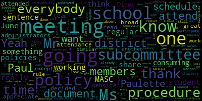
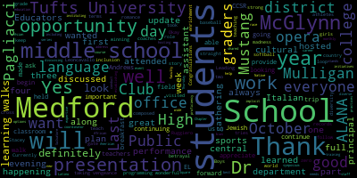

AI-generated transcript of Medford School Committee meeting October 7, 2019
English | español | português | 中国人 | kreyol ayisyen | tiếng việt | ខ្មែរ | русский | عربي | 한국인
Back to all transcripts
[Unidentified]: come to order.
[Burke]: The Secretary will call the roll. Present. Six present, one absent. Could we please wait a second for John to turn everything on? Oh, you are there. Thank you, John. Very good. You snuck. We didn't see you. Okay, all please rise and salute our flag, please.
[SPEAKER_02]: I pledge allegiance to the flag of the United States of America and to the Republic for which it stands, one nation under God, indivisible, with liberty and justice for all.
[Burke]: Thank you. Approval of minutes of September 23, 2019. Motion for approval by Mr. Rousseau, seconded by Mr. Ruggiero. All those in favor? Aye. All those opposed? Motion passes. Approval of bills, transfer of funds, and approval of payrolls. Ms. DiBenedetto, present please. Approval of bills. Ms. DiBenedetto.
[DiBenedetto]: Okay, on page one, it says the gymnastics equipment. What was actually done? Did we replace any equipment? It's $20,000, or was it just cleaning and maintenance? Oh, it was a four-floor replacement. That's great. So now it's very safe. Thank you very much for that one. Sorry, this is the day where you run and you can't catch up anyway. On page two, I don't have the page numbers, NWEA, I just was wondering what those initials stood for because we spent about $5,000 worth of professional technical upgrades. Yes. I'm sorry. Thank you. No, it's working. Did I bang it? Sorry. I don't have page numbers. Arctic engineering 30,000 school.
[Patterson]: Yes. That's the capital improvements for the HVAC on all the buildings.
[DiBenedetto]: Sorry. I just, when they're like big amounts, I just like to know what's going down or going on. And I think I only have one more. They stuck together. Um, So the math instructional supplies, were they ordered earlier in the year to open up resources and were just being billed now, or are we just purchasing them at this point?
[Patterson]: These are invoices paid, so we would have received goods prior to this.
[DiBenedetto]: OK. And my only question was because there was some concern about processing or getting supplies for our math program in the past, and I just wanted to make sure that they had everything they needed. They will have everything that they need. Yep. Thank you for your answers.
[Burke]: Mr. Ruggiero.
[Ruggiero]: Thank you, Mayor Burke. Two quick questions. I just want to know, so we're all set with all the air compressors and the HVAC, or are we still in process of repairing a number of them all?
[Patterson]: I believe the majority of the work is complete.
[Ruggiero]: OK, great. And what is, this is on page seven, what CDW government
[Patterson]: So that's technical, we have a couple of memberships for monitoring our internet capacity, so that's a contract service. And or it's technical devices, so computers, laptops, things of that nature. Great, thank you.
[Burke]: Mr. Russo.
[Ruseau]: I'm seeing the unclassified rink expenses for National Grid, and I'm a little embarrassed to ask this question. So the rinks are actually part of the school system?
[Patterson]: It's a revolving account.
[Burke]: It's a revolving account.
[Ruseau]: Right. Okay.
[Burke]: So rink fees pay for it.
[Ruseau]: Okay. Thank you.
[Burke]: All right. Thank you. Is there a motion for approval? Is there a second on the floor by Mr. Ruggiero and Ms. Van der Kloot? Roll call vote, please. Yes.
[cflR-3VqII8_SPEAKER_20]: Yes. Yes. Yes. Yes.
[Burke]: Yes. Seven in the affirmative, zero in the negative. Motion passes. Report of secretary? None? None. Report of committees. Rules subcommittee. Attendance policy October 1st. Ms. Kreatz, chairperson.
[Kreatz]: Before I read it, I just want to thank all the administrators for taking time out of their busy schedules to attend the meeting. Thank you, Ms. Toni Wray. Ms. Diane Garino, Ms. Lisa Kingsley, Mr. DeLeva, Mr. Tucci, Mr. Cushing, Mr. Johnson, Mr. Downs, Dr. Maurice, Ms. Evangelista, Ms. Emily Lazzaro, Ms. Maureen Lavin, Ms. Joan Bowen, Paulette Van der Kloot attended as well, Mr. Texeria, Diane Caldwell, I want to just thank everybody once again. I know how very difficult it is to schedule something like that and I really appreciate you all coming out to attend the meeting. The purpose of the meeting was to discuss the attendance policy that's on the MASC website. So we had a great discussion and the members of the subcommittee got to listen to all the concerns that the administration team shared with us. So what we decided was the rules subcommittee members are going to adopt a district-wide policy that's going to be very broad, and we're going to post it on the MASC website, similar to the attendance policy, or we're going to choose one that's similar to either Winchester, Somerville, Concord-Carlisle. And my colleague Paul Russo, thank you, Paul, he volunteered to get in touch with the MASC and ask them for their official document. Thank you once again, Paul, for doing this. I really appreciate it. So after we receive the document, the members of the subcommittee, what we can do is we can work together online with Google Docs and just edit the document to make it fit Medford Public Schools. Then once we have the document ready the way that, you know, we think it looks presentable, we're going to share it with the administrative team. Everybody except for Paulette that attended the meeting because that would be, you know, That would, you would be, you know, we couldn't do that. Sorry. So we're going to, yeah. So we're not, we're going to share with everybody else except for Paulette. And then I'll call another meeting to schedule another rule subcommittee, and we just have to meet briefly to vote to move it over to the regular subcommittee, regular committee meeting, and everybody can read at that time. Oh, and there was one further item that we did decide unanimously during our meeting. There's one sentence that's in the school, not the policies, but procedures. There's a sentence that mentions absent on a Friday, the student may not attend or participate in school functions on that Saturday or Sunday. So at our meeting, we all decided unanimously to redact that sentence from the school district procedures for all schools. And it will be the discretion of the coach to allow a player to participate in a weekend game if the student was absent on a Friday. So that was something that I just wanted to share with everybody. And that's about it.
[Burke]: So as a procedure, you're recommending to the superintendent to change the procedure. That's not our policy.
[Kreatz]: That's not our policy. And we did talk about that. The differences between the policy is very broad. It's one that can fit all schools. But the procedures are individual procedures for each school district. And the four elementary schools have one unique procedure. The two middle schools are working towards having one. But that's all with the school district and administrators. And we don't set those procedures, no.
[Burke]: Thank you, Ms. Kreatz.
[Kreatz]: You're welcome.
[Burke]: Ms. Mustone. Oh.
[SPEAKER_08]: Well, I was going to make a motion to suspend rules to take something out of order. Oh, OK. Sorry.
[Burke]: Is there a motion? Oh, Ms. Vanderquist? You just hit your button, and then I can pop you right in.
[Van der Kloot]: So I did attend the meeting because I was the one who had sent it from the floor. And originally, we had sent it to a committee of the whole. And then on request, we sent it to the Policy Subcommittee, but I'm not a member, so I wanted to attend, so I did. The other thing that I think was clear from the meeting was that many of the policies that we have posted on the website as Benford Public Schools need to be reviewed and updated. That at this time that they were over time, since we originally did it and we worked very, very hard to have it done originally, but it was not updated periodically as we changed policies. So I don't know exactly when we're gonna get to that, but I believe that it's probably your committee, Kathy, that wants to do that.
[Kreatz]: The superintendent's going to get copies for all the members of the subcommittee so you can start working. The meeting in June and we met several times and we updated several chapters of policies. It's very time consuming, and we met in over many hours in June, and then it was summer break, and then we came back, and we've been meeting, not like in the policy meetings, but then this was set forth to come to the subcommittee, so we have to get back to where we were. We've already begun working on updating the policies, You know, it's really time consuming, so we've done, I think we've done like chapters one to... Yeah, hold on one second. If I could just look at my notes. That's OK. Yeah, I know. It's a work in progress. Yeah, it is. It's just it's quite time consuming.
[Van der Kloot]: We have been meeting. Yeah.
[Burke]: Ms. VandeKloop.
[Van der Kloot]: I know how time consuming it is, because I was part of the original putting them together. However, as they're updated, they should be brought to the school committee for their review. We have been.
[Kreatz]: The ones that we already approved in June, we haven't. This one, we haven't approved the policy yet. That's why the meeting we just had, you were in this meeting. We did not approve the policy. Paul is going to obtain.
[Van der Kloot]: I understand. Yeah, exactly.
[Kreatz]: But then once we have it and we have it customized, I'm going to bring it forth to the regular meeting.
[Van der Kloot]: I didn't understand that your plan was to review every policy. And that's what I'm suggesting that we do. So clearly, we're on the same page. Thank you. Yes, but one at a time.
[Burke]: Yes. Is there a motion to accept this report and place it on file by Ms. Kreatz, seconded by Mr. Benedetto? All those in favor? All those opposed? Motion passes. Ms. Mustone, you're looking for suspension of the rules? She'd like to take paper item number three first, a motion for suspension of the rules, seconded by Mr. Russo. All those in favor? All those opposed? Motion granted. Recommended, I'm sorry, item three, report on PALS, Partnership for Advanced Leadership Skills. Stacey Shulman and Chief Jack Buckley, please rise. Good evening.
[Buckley]: Good evening, long time no see. So where to begin? PALS. When I became chief of police, one of the things that I thought of and one of the goals I wanted to accomplish was to bring the police presence to the schools in a much more impactful way. And we started off first with doing a lot more of the patrols to the schools. And my offices are there every day and night and checking on the schools and being a visible presence around there. And that's a safety security type. and it seems to work, but I wanted to see if I could get the officers immersed into the schools a little bit better, or more in depth. I want kids as young as kindergarten to fifth grade to be, to look at a police officer in uniform and think of the ways that I did when I was in second grade and went to school and they give you the picture to color the police officer and it was someone there who could help you, someone who was a good presence. Police have taken a bad rap and there are some people who think that the police aren't always there to help you. We've come up with this PALS program, and I say we because it really is a partnership. Myself, the superintendent, Stacey Shulman, Diane Caldwell, I approach the schools about bringing the police officers to the schools for purposes of reading to them on a regular basis, to show a human side and teach social emotional skills at the same time, accomplish dual, having lunches, and we're gonna get into this program a little bit better, more. My overwhelming goal once we go beyond the K through five is to go all the way up to the 12th grade. Now we haven't formulated plans for that, but that's what we wanna do is to immerse ourselves into those schools. So Stacey Shulman's with me. She can talk a little bit more about those social emotional learning skills. But I think it's valuable to have the police. I think it's been documented well across this country that the police presence in the schools is very important. And there's that safety security aspect which helps all the time. But it's also for the kids, for our youth to learn that the police are there as part of the community in a partnership with them and advance their skills. It's probably best at this point if Stacey talks a little bit about the social emotional well-being and then I want to talk about the D.A.R.E. program and some changes there.
[Schulman]: Sure. So there are three parts to the program. The first is reading books for K through 2 grades. that all have social-emotional learning skill development in them. I provided you with a list early on, but some of the social-emotional learning skills are responsible decision-making, self-awareness, social skills, coping strategies, and social awareness of the community in general. Officers have volunteered on a regular basis to go into all of the elementary school buildings reading the selected book of the month. The other element to this is holding social skills lunch groups with students, either by recommended through a good deed by their teacher or perhaps part of their PBIS point system that they would like to use those points to meet with an officer and discuss sort of their role in the community and all of the aspects that we teach in school, which is responsibility, respect, helping others. And the last part of it is to align the drug education, which we had previously used the DARE curriculum, with our social-emotional learning curriculum, the Michigan model. And what that allows us to do is connect the decision-making models together as opposed to having two different, they'll use the one from the Michigan model. It's also an evidence-based program.
[Burke]: So it's gonna include training of officers in the Michigan model, correct?
[Schulman]: Yes, so officers will be trained in the Michigan model extensively so that they're both aware of the curriculum and able to teach it effectively. Excellent.
[Buckley]: Any questions as we move forward?
[Burke]: OK. Mr. Ruggiero.
[Ruggiero]: I really think this is a great program. I'm really glad that we're doing it in our community. There was something I saw about a month ago on a frontline program, and I wanted to mention it to you. I don't know if this would help your work. It was about community policing. And what they were talking about in the program was how many interactions within some communities with the police is always negative. the police are coming in to often make what has appeared to be difficulties as they solve problems. One of the solutions that this program recommended was for police to offer tickets for good behavior. So if they see children in parks doing something, just like having fun, not loitering, not being destructive, giving tickets for positive behavior and trying to make the interaction with police, especially in communities that have, unfortunately, more interactions with police, more positive. And I don't know if that suggestion would help you, but I thought it was a really great idea. I know, I think it was the police department, either Sacramento or Oakland, California, had used this particular program to great effect, to create more community interaction with police in a positive light, rather than, you know, a cop comes to your house because there's a community disruption.
[Buckley]: And thank you, and I've seen some aspects of that going, and that's sort of what we're trying to do here, is to have that friendly interaction, that friendly face, and to make people understand a little bit more who we are, and to get to know the children better ourselves. So it's absolutely something we can look into and move forward, but I've been encouraging my officers all along. When I first started, and a lot of us of my age on the job, we'd be driving down the street, and there'd be a group of kids playing basketball, and you'd be out of the car playing basketball with them. A little thing, right? But it goes a long way with these kids sometimes. If we can stop that in the schools right now, I think it's going to pay off. years down the line for the police department and for the schools. But really, I mean, I mean that in a strong way. It's going to benefit us. It's unfortunate that some kids get to see the police in a bad light when we get called to the home at nighttime or at some other point in time. We want to show that there's a human side to us and so that we're approachable by these Children.
[Burke]: Mr. Ruther.
[Ruseau]: Thank you. Will there be in this process an evaluation of the performance of the officers in the schools, whether it's feedback from the teachers or maybe occasionally somebody like just going in and monitoring how it goes?
[Schulman]: Yes, absolutely. So I'll go in and guide them along if needed and just spot check with the teachers. But we're also going to be providing a quick survey before and after.
[Buckley]: Excellent. Thank you.
[Schulman]: Thank you.
[Buckley]: She'll probably kick me afterwards, but I actually think this is a potentially valuable program that if we could ever get a clinical study done to watch these children over the next 5, 10, 15, 20 years of their lives and see maybe what the impact is. But That takes a lot more, so we're going to try to advance the program first and then maybe look at some help from some of the area colleges to do that.
[Burke]: Mr. Benedetto.
[DiBenedetto]: Thank you. I first wanted to comment on the patrols that go in through those schools. When it first started, there were so many comments from offices on scanners that I was getting phone calls from my neighbors, what's going on at the schools, why are the police always there? And I said, oh, that's just them being visible and more active within our school district. And people were very pleased to hear that. So thank you for that. And I have some concrete questions about the program, if you don't mind. How many officers will be trained? Will they be at all schools? And will the same officers go to the same schools so that they can build relationships? Or will they alternate?
[Buckley]: As we start, I think I was working with Captain Fowler today and went and pulled some of the officers. We have somewhere in the area of 12 to 16 officers that are going to be trained and to be doing a lot of this stuff. But the hope is that this grows year after year and all of my officers eventually get trained on this. Like, this isn't just something we're going to do this month or this year. So ultimately, all of them will get trained sort of in the Michigan model and pushing through. As far as the PALS or DEAR curriculum, we have a core group of officers who historically taught DEAR. There's four or five of them that are going to continue. They'll be the same faces every single year for the students to remember. I want this program to have, to have all of my officer to get into school. So somehow I don't want to pick one or two or three offices. So they could say, Oh, you know, it's, it's, it's she Buckley, she Buckley, she Buckley. I want them to see and interact with different offices. So, uh, over time they'll get used to all of us. Uh, but it won't be when we do the readings and the lunches, it won't be the same officer over and over again.
[DiBenedetto]: Okay. Um, and is there any cost involved, um, with, with funding this program to the school district?
[Schulman]: Not at this time.
[DiBenedetto]: Not at this time, but in the future, you're anticipating any?
[Schulman]: Well, I purchased a good amount of books. So all the books of the month are new purchases for all the school libraries. They'll be able to retain them in the future. We may look to purchasing more books later on. I was able to secure grant funding this time around.
[DiBenedetto]: That's great. Thank you for doing that. So I understand your idea of getting all the officers in and through. But in the beginning, I think some consistency for our younger children is to getting to know them, and then switching on a regular basis. Oh, now you get a new one. That consistency, especially for some of our students, it takes them time to build relationships that it might be something worth looking at. just as a basic thing. I really like the idea of this program. I am thrilled about it and we get books on top of it. This is a win-win all the way around. I really appreciate the police department's partnership with us. and the social-emotional impact it will have on the children of MedFed. I love it. Thank you very much for bringing it.
[Buckley]: Thank you for the impact. And we will take that into consideration as we advance. And again, I said this is going to advance year after year. We're going to look into it. We're going to study it. We're going to try to keep everyone informed about this. And that might be one of the areas that we find we'll have to concentrate on.
[Kreatz]: Ms. Kritz. Yes, I want to thank you for this report, and I think it's a great partnership. It sounds so exciting. So I wanted to know, is there still going to be, I know they used to have the day of graduation for the students, and the parents were invited and very excited to attend and watch the ceremony, and is that still going to happen, something like that?
[Schulman]: Yes, so we will keep the ceremony aspect of it. It will instead be just called a PALS graduation. We're planning on having t-shirts as well, perhaps including a contest where students can draw the logo for it on what PALS means to them.
[Van der Kloot]: Great. Thank you. Thank you.
[Schulman]: Ms.
[Burke]: Van der Kloot.
[Van der Kloot]: I, too, just wanted to add my thanks to both of you, and I particularly appreciated, as I read the part about sort of revamping the DARE education to now fit within the Michigan model. That includes vaping education as well, and I think that's something that we're all concerned about. So I was really glad to see that that was articulated in here as well. And I think it's a wonderful idea. I think that I used to run lunch bunches, and I know how valuable they can be for kids. It's a little bit relaxed. They look forward to it. And having a police officer as a friendly face in the room, I think, is a wonderful idea. So thank you very much.
[Buckley]: Thank you.
[Burke]: Thank you very much. Is there a motion to receive this report and place it on file? Motion seconded by Mr. Giro all those in favor all those opposed motion passes Thank you very much both of you and team Medford and all the administrators that played a role in Creating this so we look forward to it. Thank you.
[Buckley]: Thank you.
[Burke]: Thank you Sir motion to revert to the regular order of business by mr. Russo seconded by mrs. Van der Kloot all those in favor all those opposed motion passes report of the superintendent the superintendent's update and comments and Madam Superintendent, let me get you on.
[Edouard-Vincent]: Okay. Good evening, everyone. So Medford High School students visited the opera. Last week, students taking Italian at Medford High School attended Pagliacci, an Italian opera composed by Ruggiero Leoncavallo. Leading up to the performance, students learned about the story of Pagliacci. Pagliacci is a wonderful opera full of romance, betrayal, madness, and vengeance. This was such a great opportunity for our students. Our world language department always tries to teach cultural enrichment along with teaching languages. In terms of middle school, middle school sports, I just wanted to follow up and keep you in the loop on what's happening with our middle school sports programming. Currently, the Mustangs all have winning records. Boys and girls cross country are three and zero, softball is three and two, and baseball is four and one. Congratulations to the coaches and athletes for their strong performances straight out of the gate. I would also like to just update you that Dr. Stacey Mulligan, our grade 10 assistant principal, also took on the role this year of diversity and inclusion coordinator for the Medford Public Schools. Her plan over the course of this school year will be to work with central office, faculty, and staff to help address the needs of our diverse school district. Dr. Mulligan plans to conduct a few new initiatives this year, including instituting implicit bias, cultural proficiency training district-wide, hosting a four-part symposium series discussing race and education, in establishing the Medford Chapter of ALANA Educators. And ALANA stands for African, Latino, Asian, and Native American. Last Thursday, the ALANA hosted their first monthly gathering at Salvatore's in Medford, Medford Square. At the event, educators discussed best practices and shared expertise, as well as discussed options for career advancement. We all appreciate Dr. Mulligan's leadership on these important issues. The McGlynn School. The McGlynn third graders received a visit from the Medford Rotary Club, who provided students with dictionaries and bookmarks. In addition, The Medford Kiwanis Club made financial donations to CCSR, the Mustang Cheerleaders, and the Mustang Athletic Department. So the Medford Public Schools appreciates the continuing support that these service clubs provide to our students. Back at the middle schools. Last week, along with Mayor Burke and Dr. Cushing, I attended the first of the Greater Boston PFLAG presentations, which was held at the Andrews Middle School. This presentation will also be held at the McGlynn Middle School and Medford High School. The eighth graders learned about the importance of making sure all people who are lesbian, gay, bisexual, transgender, and queer are valued as part of the Andrews community. The students were encouraged to always be kind, supportive, and inclusive to all. Schools should be a safe place for our students. We thank CCSR and the Foundation Trust Grant for bringing this important and informative presentation to our schools. The McGlynn 8th graders participated in a field trip to learn about the college process. Tufts University hosted the students. The admissions office made a presentation and students could ask questions. Then the students were taken on a tour of the campus and they were able to eat lunch at Tufts University in a cafeteria at Tufts University. Principal Tucci had the students prepared for this field trip by having teachers discuss their college experiences with them during their wind walk on college day at the McGlynn. which was on October 2nd. It was an excellent opportunity for them. I would like to thank Tufts University for their generosity in agreeing to engage our young students. I also just want to remind everyone that Medford Public Schools continues to provide free breakfast for all students. It is our hope that all students will take advantage of this opportunity and start the day with a healthy breakfast. Lastly, Yom Kippur begins tomorrow at sundown. It is the holiest day of the Jewish year. I extend all good wishes to all of our Jewish friends as they begin this solemn holiday. Thank you.
[Burke]: Thank you very much.
[Buckley]: Ms.
[Burke]: Vandekloot.
[Van der Kloot]: Superintendent, I was wondering if you could let the school committee know when the next PFLAG presentation will happen at the McGlynn. So would it be possible for us to attend? Is that something that would be OK?
[Burke]: There's two more at the Andrews.
[Van der Kloot]: Yes.
[Burke]: If I'm not mistaken, for seventh and then sixth grade, and then the McGlynn is next.
[Edouard-Vincent]: I'll get the official dates and send them out to you. Great. Thank you.
[Van der Kloot]: And it would be OK if we attended?
[Edouard-Vincent]: Yes. OK.
[Van der Kloot]: Thank you.
[Burke]: Thank you. Mr. Benedetto.
[DiBenedetto]: Thank you. Thank you for the updates. I really like hearing everything going on. It also reminded me about when you mentioned the free breakfast, I was at a meeting last week and a parent came up to me and said the middle school bus was getting there three minutes before the time to go to class. So there's really no time for those students to go and get a free breakfast before the bell. So could we look at- Yeah, I'm gonna follow up with transportation to try to figure out what- All buses, let's just check to make sure kids are there early enough to have their free breakfast.
[Edouard-Vincent]: Yes, we'll definitely do that.
[DiBenedetto]: It didn't affect this particular family, but it just brought to light that some kids who might need breakfast really need to be there early enough so they can have it. And if not, then some way those children should be allowed to have their breakfast, even if it's after the bell or somehow. I will look into it. Yeah. Thank you. I appreciate that.
[Burke]: Thank you, Mr. Ruggiero.
[Ruggiero]: Yeah, in terms of the free breakfast program, I've been hearing a couple of issues I just wanted to clarify with you. So are these just like cereals that we're offering or what? They're pretty, they're robust.
[Edouard-Vincent]: I'm going to ask Assistant Superintendent Christine Patterson to come forward. She has all of the details, but it definitely is more than cereal. Right.
[Patterson]: Yes, this initiative has gone full scale, and we are offering a hot option at every school building. So that is part of our intent to get participation. Again, after the three month pilot, you will have a full comprehensive report on the counts and the ability to continue or revisit the actual program. But we are doing full scale hot breakfast options. We do have a new chef. kitchen manager at the high school level, and he is doing scratch cooking for the breakfast, so we are trying to encourage participation. The high school does have the most time in the morning, so we are also including signage. This has been a full-scale intent to get student participation for free breakfast, so it has been everybody in their best efforts to get that happening.
[Ruggiero]: Yeah, I know the report is not officially out yet, but could you give us a sense of what the participation rate is, just a ballpark figure?
[Patterson]: I know that we have seen increases since the start of school, but they're not to the extent that we need them. Okay, thank you.
[Burke]: Thank you, Mr. Russo.
[Ruseau]: Thank you. So, I know, like, Transportation's always an issue. Too much of your time, I'm sure. But this morning, the Andrews bus got in, I believe, at 810, which is long after breakfast would have been done. Does the kitchen staff, is there a process where the kitchen staff knows, OK, now you can
[Patterson]: stop or did they like get 805 stop so the the bus this morning was a fluke issue it was an illness of one of the drivers they scrambled to get somebody so the the hope you know there is traffic issues and somewhat that hold it up but we have been adamant that all of the buildings that when the buses arrive that they are allowed to disembark the bus and go in for breakfast in the cafeteria immediately so that has been the directive to all the building principals. And to my knowledge, they have been exercising that. We did have an issue. I know that we do have some issues with the MBTA buses. Again, we're trying to provide alternate options. But again, we can only do so much to provide a meal. The students still have to come in and take it. And even if it's a late bus, or a late arrival, or if they're able to come in to some extent. Thank you.
[Burke]: Very good. Next up, recommendation to approve field trip to Argentina. Mrs. Lepore. And Ms. Boller. Oh, there's already a motion on the floor. Is there a motion on the floor for approval? And Ms. DiVanadotto, is there a second? Ms. Prats.
[SPEAKER_02]: Oh, that was easy. It's up to you.
[Burke]: Sounds amazing.
[SPEAKER_08]: Yeah, it is. This is my third attempt to try to do the trip. I tried back when 9-11 happened and the trip was canceled, logically. And then we tried one more time. And this time it seems to have taken. And so we're really excited. I think the long flight has probably been a factor also. It's a 10 hour flight from New York City. So I know that that has swayed the students and the families. The expense, we have paid, I'm sure you were able to look over the papers. The cost of the trip is 3,900, 39, 40, I know some of the trips to Europe have cost that, especially the April trips, but this one is exceptionally expensive because of the flights, and we're also gonna be flying to Iguazu Falls, which is the largest waterfalls in the world, and it borders Brazil, so there will be a flight, and we will be staying overnight there, and there will be activities that we're going to be doing there, also a cooking lesson and things that are being planned. The field rep that is representing Vamonos Tours is traveling October 25th to fine tune the itinerary that you have in front of you, so there might be some changes, but one of the changes in particular that I'm working on is visiting a high school instead of an elementary school. When I took the students to Madrid and Barcelona, we went to a high school, and that was an incredible experience for the students. And they're still keeping in touch with some of the students they met there. And we spent half a day there, too. It wasn't just an hour. And we had lunch. They had lunch for the students. And they were able to spend time with the students without us, and we spent time with the teachers. So, it was a great experience. I don't know if you have any questions about the trip.
[Burke]: I think there's a motion on the floor for approval. Roll call vote please. Yes, seven in the affirmative, zero in the negative. Motion passes. Keep us posted.
[SPEAKER_08]: So we'll come back and give you some tango lessons when we get back. Please do. Thank you.
[Edouard-Vincent]: Have fun.
[Burke]: Bye bye.
[Edouard-Vincent]: Thank you.
[Burke]: OK, report on building and grounds. Security update. Mr. McLaughlin. Kramer.
[Mr. McLaughlin]: Yes. Good evening, Mayor Burke, Superintendent, and School Committee. So, as you know, buildings and grounds does take a high stake in the security of our school district. Over the last few years, I've been very active in the process of walking through our buildings with Lieutenant Covino, auditing the district, and assessing our needs. I have also worked to help the technology upgrades as well as camera management and landscaping. For over a year, I've been working with the district wide security commission that is comprised of strategic personnel, the method police, and we're trying to create a security foundation to move forward on. Some of the items that we're currently in the process of revising are designated parking at a high school complex for students working collaboratively with the city engineer to expand parking options at the high school. So basically what we're trying to do is we're trying to find some more parking. There's issues definitely on the weekends. There's a lot of things we can do. We can maybe take an island out here and there and expand parking in that particular way. And we're also obtaining the pricing because we're going to be looking into our communication systems, our two-way radio systems. We're trying to get unity throughout the district. Right now, every school does have communication systems. that are working, but we're just trying to make it that much better. That way we'll all be able to communicate and there'll be no, you know, you go into one radio. Each system right now has their own frequency that they operate on. And then one of the biggest things that's really, really good is we're going to be doing the see something, say something app. It's a phone app and it's going to be students and staff where they can anonymously report things that they feel they want to report. They can report anything. They can report a broken window, they can report whatever they see the need to report. So I think that that's something that's going to work out well and we're going to be hopefully rolling that out around in January. So we'll see how that goes and we'll certainly update some more. So we want to be transparent in what we're up to. We can't always say what we're up to, but we do want to try to let the community know that we are busy, we are working, we are trying to make updates. We do have a plan, we do have a list, but we just can't get into the specifics because it just wouldn't do anybody any good for us to do that. We do a lot already. As you know, we have the Raptor systems in place. We have monitors at doors. We're very conscious of people coming in and out of buildings. Now I know at the high school we've made some updates where not only do you sign a person in, but you actually call the destination that they're going to. So that way the person that they're going to meet is expecting them and can be waiting for them or in the hallway or whatever they need to do. So we're continuously trying to improve on a system that we already have that's pretty good. So I can take any questions if you wish.
[Ruseau]: Thank you, sir. My pleasure. The see something, say something app, do all the reports end up in one giant pile for you?
[Mr. McLaughlin]: Or is it- Well, I would assume that it's going to go back to a designated person. I would assume that in that person would disseminate where the next destination would be, which I would assume a principal or the headmaster for more, so that they can look into it. Like I said, it could be a buildings and ground issues, this comes to me. It could be anything. It could honestly be any issue that somebody decides. It's almost like, is that the 311 system? Yeah, the C-Click fix, it's sort of on that idea.
[Ruseau]: After it's up, even for just 30 days, can we, I don't need a gory detailed report or anything, but just like Did you get six reports or did you get 5,000? Sure. Oh, yeah.
[Mr. McLaughlin]: Well, that's, yeah, that's absolutely, you know, I mean, we're going to roll it out and hopefully, you know, put it this way. If we don't get anything, that's a good thing. If we do and we're able to avert something, that's a good thing as well.
[Burke]: Does it have a blog attached to it? Just a warning. Thank you, Mr. Russo. Mr. Benedetto.
[DiBenedetto]: Thank you. First of all, I'd like to thank you for all the security measures you put in place with yourself and all of the people working at our buildings. The lighting changes, the camera changes. You're very responsive. Your department has been excellent. And not just now, but you've always done a great job.
[Mr. McLaughlin]: Thank you very much.
[DiBenedetto]: Thank you. At this point I'd like to make a motion for this committee to move forward with studying the security director position so that way when we have this app in place we have someone to actually answer that in security measures. I know that we had put it forward last year in conjunction with the city position, but since that didn't get approved, I would like to move forward. I think this is imperative. I think we should have this in place for next school year. So I need one of my colleagues to second the motion.
[Burke]: To add it as a budget request?
[DiBenedetto]: Yes.
[Burke]: That's the goal?
[DiBenedetto]: Yep.
[Burke]: Is there a second by Ms. Kritz? Yes. On the motion to add this item as a budget request as part of this paper, it can be debated during the budget process. It's not automatic. OK. All right, thank you. Ms. Van der Kloot.
[Van der Kloot]: I just wanted to thank you, too, for your efforts. I was curious a little bit just about the parking. So it sounds like we need more parking spaces. Is that because more students are driving to school?
[Mr. McLaughlin]: Well, I think a lot. Honestly, your parking issues. I wouldn't call them huge issues. I would say that on the weekends, it's more of an issue than it is during the week. But we also wanted to try to consolidate student parking. And that way, we can have the students in one section. And that way, we know that the staff is another section. And so we really wanted to disseminate it that way, where we had areas that are recognized for certain parking situations.
[Van der Kloot]: Which is the area for student parking?
[Mr. McLaughlin]: Well, normally, I mean, we used to call it back in the day the tennis court. So the front left-hand side of the building, you know, out front, there's great coverage out there, camera coverage out there. It'll work out, you know, it'll work out nice. I know the headmaster of the labor at the high school has been working on a plan as well where he's been handing out, I believe he might be handing out some passes, different passes, and just to get a handle on who's up there, who's parking up there. We've done it in the past a few times, so we just wanted to reach. institute what's been happening with the parking. But if there is a parking situation, it's more towards the weekends with the field and the rentals running at the same time. Thank you.
[Burke]: Mr. Ruggiero.
[Ruggiero]: Thank you, Mayor Burke. Thank you very much for the report. You've done a great job trying to keep this stuff up. My one concern is- Well, it's not just me, by the way.
[Mr. McLaughlin]: There's a lot of pieces to it. I could never sit here and take the credit myself.
[Ruggiero]: Fair enough.
[Mr. McLaughlin]: Fair enough.
[Ruggiero]: I do have one little concern to sort of branch off what Member Ruseau was talking about. Let's see something, say something out. That phrase carries a police connotation to me. When I hear that, I think I see something on a subway that looks suspicious, and I'm going to report it. But my concern is that it's going to go into one giant bucket. So there's going to be the broken light, linoleum that's a little warped, with what could be a serious security concern in that same place.
[Mr. McLaughlin]: I certainly don't think that it's going to be that way myself personally. And I know that myself and other administrators, we do take it serious. We live and we learn every day. We see things every day. I don't really have a concern that it wouldn't be taken lightly like that. I just don't, I just can't see it in this day and age. You know?
[Ruggiero]: It's not just because of the way you were describing it a second ago. What I'm trying to say is I apologize.
[Mr. McLaughlin]: I'm not trying to to make it seem like, I'm just trying to say it can be used for any connotation, whether it's somebody that sees something that they want to report correctly.
[Ruggiero]: Right, right. And a light is a security measure. Right. I just want to make sure that we're going to be able to separate the signal from the noise. Like, obviously a broken light is important, but a suspicious bag is more important.
[Mr. McLaughlin]: And even at first, The person that came to explain it to us said, yeah, you're going to get that. The first month or so, you're going to get all frivolous stuff. You know what I mean? But you also, people like myself, people like Kirsten, people that have to You know, be the front runners on that stuff. Take it serious. You know, we do. We do. OK. Great. Thank you.
[Burke]: Thank you. Mr. Russo, one more?
[Ruseau]: I just have a question about, so, you know, the weekend traffic situation, which, I mean, this is only my second year here, but I think we talk about it every other meeting. At one point last year, we talked about the issue of, you know, when we were talking about bringing Leslie in as a partner, there were some concerns around parking. And one of the things that we talked about was whether or not events are being scheduled, you know, right up to 12, and then the next event scheduled at 12, which means you need twice as much parking than either event themselves need. And so my question is, and I think we had talked about it when we went really into the weeds around the various scheduling apps that the school system has, are we still scheduling something that goes until 12 and then something else starts at 12? Or are we giving half-hour breaks between every event?
[Schulman]: It's probably a 10-minute break.
[Ruseau]: Because a 10-minute break isn't enough for a basketball game to get out, everybody to get... For the fields, I'm not talking inside.
[Burke]: For the fields, it's usually you go up to 50 minutes, 10 of the hour, and then something new starts at the hour.
[Ruseau]: And everybody coming in at 12, they're there at 20 of. And this is not just an issue of like, we can take down the fells and build parking if we want. No, we can't.
[Unidentified]: And we won't.
[Ruseau]: My point is just like, we can solve this in a way other than just adding more parking spots. And yeah, it does require that we take away a small number of minutes a day when the facilities are used. But it just seems like an easy fix. I mean, granted, I realize that sports are scheduled out like a year or two in advance, so it's an easy fix that might take a year or two to happen.
[Burke]: In high school, sports aren't limited to an hour. They go until they're done, which is different than someone renting the field is the 50-minute hour.
[Ruseau]: Right, so I mean, I just feel like this is something we could do to bring this down. Because honestly, I can't believe the fire and police don't say anything to us about what it's like there on a Saturday. They're just not.
[Burke]: They go through.
[Ruseau]: They do. They might go through, but you can't drive through.
[Mr. McLaughlin]: You can't get in or out. I see them all the time. At the beginning, it's gotten a lot better recently. But at the beginning of September, there were some renters that were very unhappy when they came out. And they found that they had tickets, I think, what were they, $100 tickets or something like that for parking in the fire lanes. And I mean.
[Burke]: And that skating park has helped a little bit. Because they've used that now for parking. So that's alleviated a little bit.
[Mr. McLaughlin]: Yeah, I mean, everybody wants to get as close to the door as they can. You know what I mean? And that's one of the, I mean, Medford High School is such a large building that it's like, you have to be so conscious of how you open doors and such because, you know, you can't tell somebody to park at the skate park and then go down to the front door because it's 800 yards away, you know what I mean? It's like a quarter of a mile walk, you know? So you really have to cater and you really have to be, you know, about what doors that you have open to make it convenient for people. But there's plenty of parking, you'll always find a spot, you know, during the week up in the skate park, there's probably six, 20 spots open at all times.
[Burke]: Thank you.
[Mr. McLaughlin]: Thank you.
[Burke]: All set? On the motion that we accept this report with an amendment to consider a head of security position for the Medford public school budget. On the motion, all those in favor? All those opposed? Motion passes. Report on ongoing math learning walks, Dr. Edouard-Vincent.
[Edouard-Vincent]: Yes, good evening, everyone. I just want to give you a brief update. It's October. We are up and running. Not only are we going to be conducting learning walks this year at all elementary schools, we have rolled it up through all of the schools. I'm pleased to announce that many of you will be joining us for at least one of the mathematical learning walks to see what the work looks like. Leslie will continue to partner with us And we will be using the five core actions, continuing that work, building a common language amongst teachers, administrators, and the central office team to do that work. So just wanted to let you know, the month of October, we are gathering our baseline data, and I look forward to updating you on how we do with the end of those learning walks, and hearing your feedback as well.
[Burke]: Mr. Ruggiero.
[Ruggiero]: Thank you, Mayor Burke, and thank you very much for your commitment to improving our math curriculum. I would just like to suggest, as you're walking through, if we can get an update on how you feel like our ELL instruction in the math environment is doing. As I voiced earlier today, it's an area I think is of concern. And I would be very interested to hear about your thoughts in this regard about how we, because I think, you know, the reason why we're suffering in our percentages is this one, a couple of areas, and that's one of them.
[Edouard-Vincent]: Yes, we definitely will be looking at EL, not only our EL students, we'll be looking at our students with disabilities. We'll also, during the walks, have an opportunity to look at full-size classrooms and some smaller classroom settings. So we do want to be able to report out on what our subgroups are doing as well, so that we have a well-balanced view of what's happening in the district. Thank you. Thank you. Thank you.
[DiBenedetto]: I look forward to hearing more about your continued progress with your learning walks, Dr. Vincent. I did notice on the back of requested reports, at our last meeting, I requested an update on math supplies, materials, and consumables. Would you just add that to the list of reports with the school committee dates? Since we were talking about math blocks, I thought it was appropriate at that time. Thank you.
[Burke]: Motion to receive this report, place it on file by Ms. Van der Kloot, seconded by Ms. Kreatz. All those in favor? Aye. All those opposed? Motion passes. School committee resolutions be it resolved that the Medford School Committee express its sincere condolences to the family of Charles Ferranti. Mr. Ferranti was the father of Robert Ferranti, a physical ed teacher at the Roberts Elementary School. And also be it resolved the Merritt School Committee expresses sincere condolences to the family of Angela Keddie. Ms. Keddie was mother-in-law of Columbus Elementary School special education paraprofessional Patricia Keddie. All please rise for a moment of silence. Oh, I'm sorry. Be it resolved that the Medford School Committee expresses sincere condolences to the family of Anthony Ardanga. Mr. Ardanga was the husband of Rosemary Ardanga, who has donated countless hours of her time to the city of Medford and Medford Public Schools. And be it resolved that the Medford School Committee expresses sincere condolences to the family of Leo Skip Diversion, Jr. Mr. Diversion was married to former Roberts Elementary School Administrator Assistant Kim Diversion. All please rise for a moment of silence, please. Motion to adjourn. All those in favor? Aye. All those opposed?
[Unidentified]: Motion passes.
Burke
total time: 6.45 minutes
total words: 963

|
DiBenedetto
total time: 6.08 minutes
total words: 919

|
Ruggiero
total time: 3.2 minutes
total words: 627

|
Ruseau
total time: 2.99 minutes
total words: 537

|
Kreatz
total time: 5.19 minutes
total words: 836

|
Van der Kloot
total time: 2.42 minutes
total words: 450

|
Edouard-Vincent
total time: 6.69 minutes
total words: 940

|
|
|
|
|
|
|
|
|
|
|
|
Back to all transcripts
{kind=link}
{kind=link}
{kind=link}
{kind=link}
{kind=link}
{kind=link}